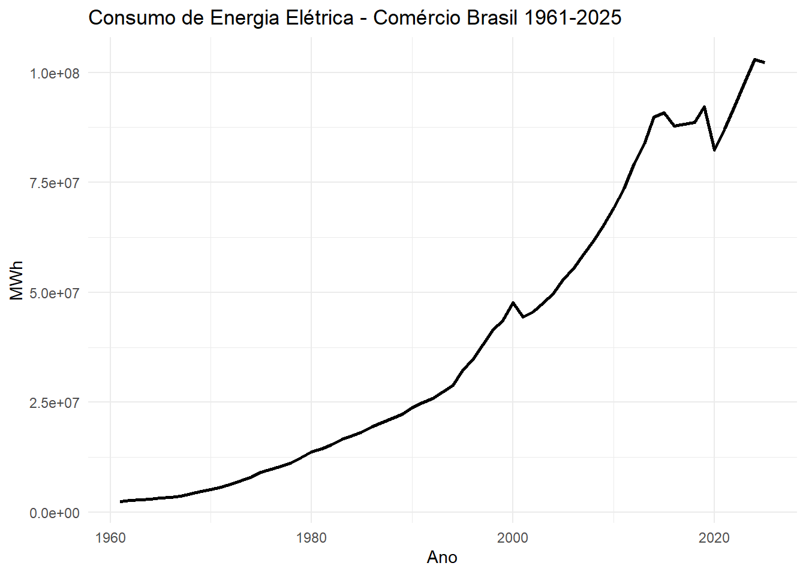
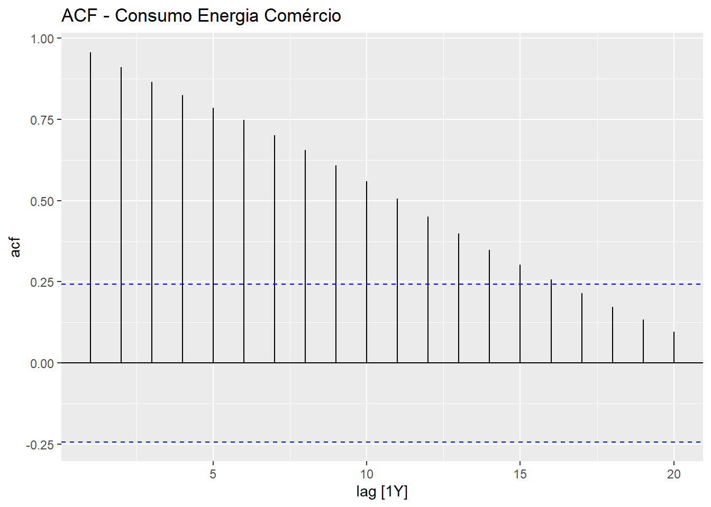
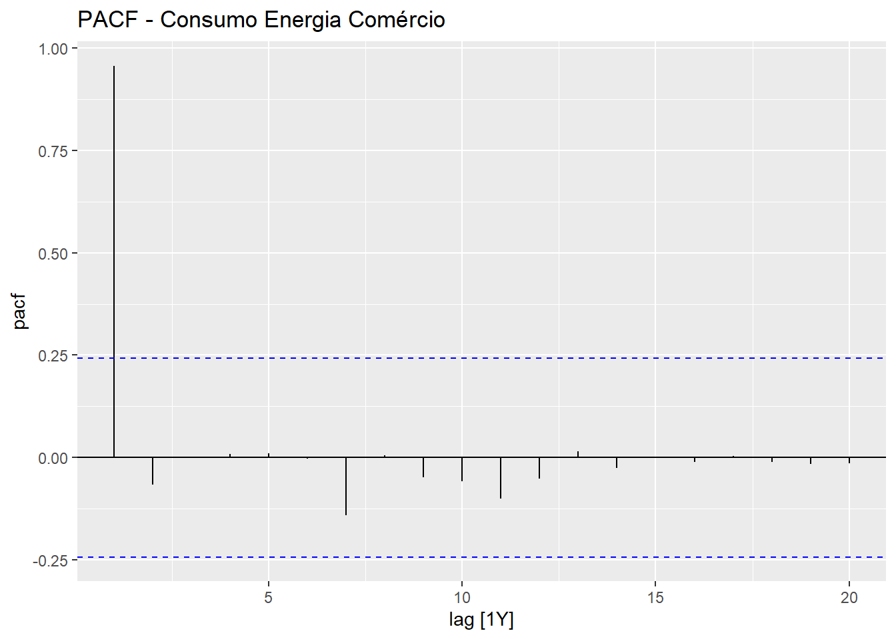
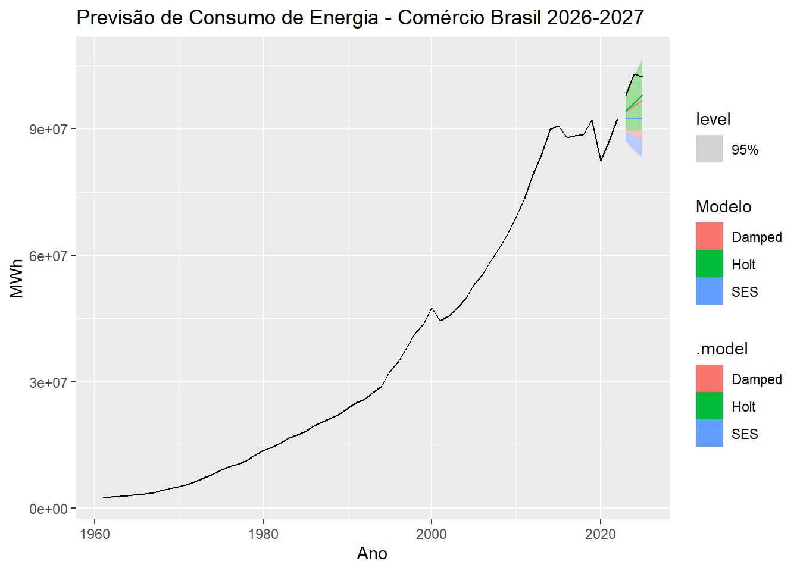
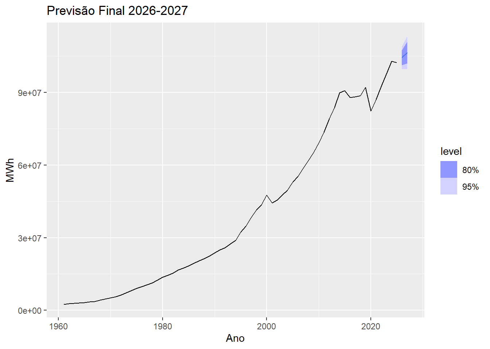
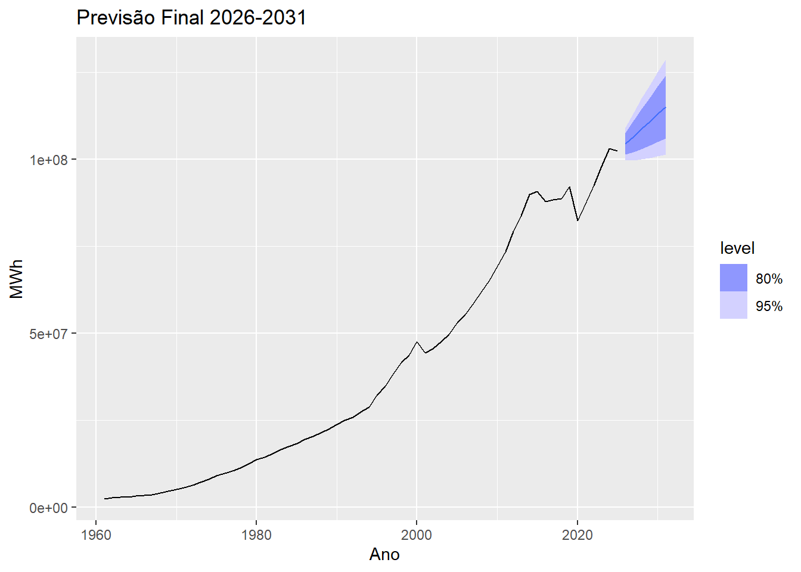
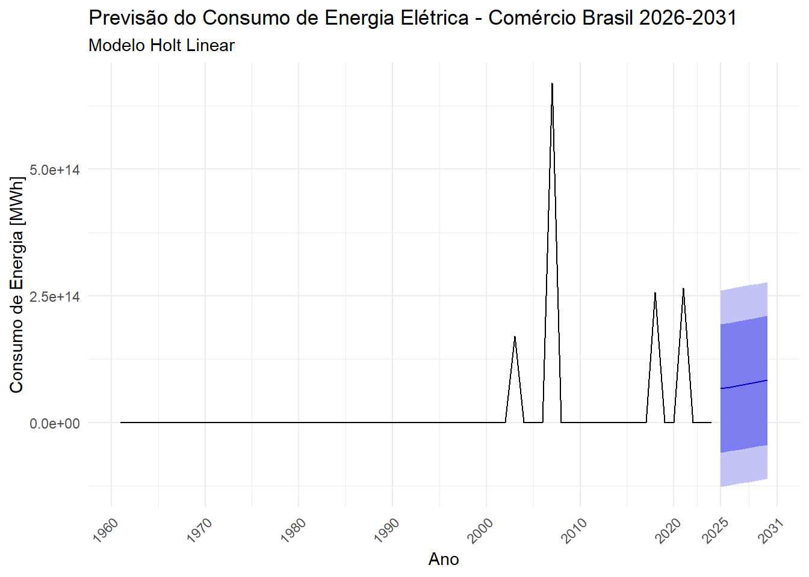

library(dplyr)
library(fable)
library(feasts)
library(forecast)
library(fpp3)
library(ggplot2)
library(readxl)
library(tidyr)
library(tsibble)Projeto 1 - Consumo de Energia Elétrica no Brasil
INTRODUÇÃO
O consumo de energia elétrica no setor comercial é um importante indicador do desenvolvimento econômico e social de um país. No Brasil, a energia elétrica é obtida por meio de uma matriz diversificada, sendo essencial o seu planejamento para garantir o abastecimento e a eficiência energética.
Diante do crescimento da demanda, torna-se necessário utilizar ferramentas estatísticas que permitam projetar cenários futuros. As séries temporais se destacam nesse contexto por modelarem o comportamento de uma variável ao longo do tempo e gerarem previsões.
Este trabalho tem como objetivo analisar a série histórica do consumo final de energia elétrica no setor comercial no Brasil, no período de 1961 a 2025, com dados do Ministério de Minas e Energia - MME, e realizar previsões para os anos de 2026 a 2031 utilizando modelos de Suavização Exponencial.
Os dados foram coletados no Ministério de Minas e Energia, Balanço Energético Nacional (MME).
METODOLOGIA
Os dados foram obtidos no Balanço Energético Nacional do Ministério de Minas e Energia - MME, referentes ao consumo final de energia elétrica no setor comercial, com frequência anual de 1961 a 2025, em MWh.
A análise foi realizada no software R versão 4.4.0. Para tratamento dos dados foram utilizados os pacotes dplyr e tidyr. A estruturação da série temporal foi feita com o pacote tsibble. As análises exploratórias de ACF, PACF e Decomposição foram realizadas com o pacote feasts. A modelagem e previsão foram feitas com o pacote fable e a visualização gráfica com ggplot2. A leitura do arquivo Excel foi feita com readxl. R CORE TEAM, 2024.
Modelos de Suavização Exponencial
Para a previsão foram utilizados os modelos da família ETS - Error, Trend, Seasonality, que são modelos de Suavização Exponencial. Esses modelos são amplamente utilizados para séries temporais por atribuírem pesos exponencialmente decrescentes às observações passadas.
# Carregar os dados
library(readxl)
tmpA925 <- read_excel("~/GitHub/Series_Temporais_Ana_Beatriz-/dados/tmpA925.xls")
View(tmpA925) ## Deixar no formato longo: Sigla | Ano | consumo_energia
df_long <- tmpA925 %>%
dplyr::select(-c(Codigo, Estado)) %>%
tidyr::pivot_longer(
cols = -Sigla,
names_to = "Ano",
values_to = "consumo_energia"
) %>%
dplyr::mutate(Ano = as.integer(Ano)) %>%
dplyr::filter(!is.na(consumo_energia))## Criar série temporal do Brasil - somando todas UFs
serie <- df_long %>%
group_by(Ano) %>%
summarise(consumo_energia = sum(consumo_energia, na.rm = TRUE)) %>%
as_tsibble(index = Ano) %>%
tsibble::fill_gaps()
## imputacao de missing
serie <- serie |>
model(ARIMA(consumo_energia)) |>
interpolate(serie)head(serie)# A tsibble: 6 x 2 [1Y]
Ano consumo_energia
<int> <dbl>
1 1961 2510142
2 1962 2698493
3 1963 2871984
4 1964 2972811
5 1965 3257158
6 1966 3466811tail(serie)# A tsibble: 6 x 2 [1Y]
Ano consumo_energia
<int> <dbl>
1 2020 82416045.
2 2021 87100681.
3 2022 92491733.
4 2023 97912620.
5 2024 103002086.
6 2025 102288645.## Plot da série
serie %>%
ggplot(aes(x = Ano, y = consumo_energia)) +
geom_line(size = 1) +
labs(title = "Consumo de Energia Elétrica - Comércio Brasil 1961-2025",
y = "MWh", x = "Ano") +
theme_minimal()
## ACF e PACF
serie %>%
ACF(consumo_energia, lag_max = 20) %>%
autoplot() + labs(title="ACF - Consumo Energia Comércio")
serie %>%
PACF(consumo_energia, lag_max = 20) %>%
autoplot() + labs(title="PACF - Consumo Energia Comércio")
## Treino e Teste. Usar até 2015 para treinar e 2016-2025 para testar
train <- serie %>% filter_index(1961 ~ 2022)
test <- serie %>% filter_index(2023 ~ 2025)## Estimar modelos ETS
fit <- train %>%
model(
SES = ETS(consumo_energia ~ error("A") + trend("N") + season("N")),
Holt = ETS(consumo_energia ~ error("A") + trend("A") + season("N")),
Damped = ETS(consumo_energia ~ error("A") + trend("Ad") + season("N"))
)## Previsão h = 3 anos: 2023 a 2025
fc <- fit %>% forecast(h = 3)## Gráfico das previsões
fc %>%
autoplot(train, level = 95) +
autolayer(test, colour = "black") +
labs(y = "MWh",
title = "Previsão de Consumo de Energia - Comércio Brasil 2026-2027") +
guides(colour = guide_legend(title = "Modelo"))Plot variable not specified, automatically selected `.vars = consumo_energia`
## Medidas de acurácia
accuracy(fc, test)# A tibble: 3 × 10
.model .type ME RMSE MAE MPE MAPE MASE RMSSE ACF1
<chr> <chr> <dbl> <dbl> <dbl> <dbl> <dbl> <dbl> <dbl> <dbl>
1 Damped Test 5699920. 5894004. 5699920. 5.61 5.61 NaN NaN -0.549
2 Holt Test 4889192. 5084686. 4889192. 4.82 4.82 NaN NaN -0.640
3 SES Test 8576591. 8866807. 8576591. 8.44 8.44 NaN NaN -0.246## Melhor modelo e previsão final para o futuro
### Escolha o menor RMSE/MAPE do passo anterior. Ex: Holt
mod_best <- serie %>%
model(Holt = ETS(consumo_energia ~ error("A") + trend("A") + season("N")))
forecast_final <- mod_best %>% forecast(h = 2)
forecast_final %>% autoplot(serie) +
labs(title = "Previsão Final 2026-2027", y = "MWh")
## Melhor modelo e previsão final para o futuro
### Escolha o menor RMSE/MAPE do passo anterior. Ex: Holt
mod_best <- serie %>%
model(Holt = ETS(consumo_energia ~ error("A") + trend("A") + season("N")))
forecast_final <- mod_best %>% forecast(h = 6)
forecast_final %>% autoplot(serie) +
labs(title = "Previsão Final 2026-2031", y = "MWh")
# 1. Limpeza dos dados do Excel (Removendo colunas de texto antes de pivotar)
dados_limpos <- tmpA925 %>%
dplyr::select(-c(Codigo, Estado)) %>%
tidyr::pivot_longer(
cols = -Sigla,
names_to = "ano",
values_to = "consumo_energia"
) %>%
mutate(
ano = as.integer(ano),
consumo_energia = gsub("\\.", "", as.character(consumo_energia)),
consumo_energia = gsub(",", ".", consumo_energia),
consumo_energia = as.numeric(consumo_energia)
) %>%
group_by(ano) %>%
summarise(consumo_energia = sum(consumo_energia, na.rm = TRUE)) %>%
filter(!is.na(ano), !is.na(consumo_energia)) %>%
arrange(ano)
# 2. Série temporal clássica
consumo_ts <- ts(dados_limpos$consumo_energia, start = 1961, frequency = 1)
# 3. Ajustar o modelo Holt e prever 6 anos à frente
mod_best <- holt(consumo_ts, h = 6)
# 4. Parâmetros do modelo
summary(mod_best)
Forecast method: Holt's method
Model Information:
Holt's method
Call:
holt(y = consumo_ts, h = 6)
Smoothing parameters:
alpha = 0.0045
beta = 0.0045
Initial states:
l = 2183106.6791
b = 286046.2422
sigma: 9.902387e+13
AIC AICc BIC
4397.015 4398.049 4407.809
Error measures:
ME RMSE MAE MPE MAPE MASE
Training set 1.133076e+13 9.587945e+13 2.822219e+13 -3258511 3258561 0.6521161
ACF1
Training set -0.07457178
Forecasts:
Point Forecast Lo 80 Hi 80 Lo 95 Hi 95
2025 6.706831e+13 -5.983588e+13 1.939725e+14 -1.270149e+14 2.611515e+14
2026 7.033804e+13 -5.657131e+13 1.972474e+14 -1.237531e+14 2.644291e+14
2027 7.360777e+13 -5.331319e+13 2.005287e+14 -1.205011e+14 2.677166e+14
2028 7.687751e+13 -5.006409e+13 2.038191e+14 -1.172629e+14 2.710179e+14
2029 8.014724e+13 -4.682660e+13 2.071211e+14 -1.140425e+14 2.743370e+14
2030 8.341697e+13 -4.360327e+13 2.104372e+14 -1.108437e+14 2.776777e+14# 5. Tabela para conclusão
tabela_conclusao <- data.frame(
Ano = 2026:2031,
Previsao = round(as.numeric(mod_best$mean), 0),
LI_95 = round(as.numeric(mod_best$lower[, 2]), 0),
LS_95 = round(as.numeric(mod_best$upper[, 2]), 0)
)
print(tabela_conclusao) Ano Previsao LI_95 LS_95
1 2026 6.706831e+13 -1.270149e+14 2.611515e+14
2 2027 7.033804e+13 -1.237531e+14 2.644291e+14
3 2028 7.360777e+13 -1.205011e+14 2.677166e+14
4 2029 7.687751e+13 -1.172629e+14 2.710179e+14
5 2030 8.014724e+13 -1.140425e+14 2.743370e+14
6 2031 8.341697e+13 -1.108437e+14 2.776777e+14# 6. Gráfico final
autoplot(mod_best) +
scale_x_continuous(breaks = c(seq(1960, 2020, by = 10), 2025, 2031)) +
labs(
title = "Previsão do Consumo de Energia Elétrica - Comércio Brasil 2026-2031",
subtitle = "Modelo Holt Linear",
y = "Consumo de Energia [MWh]",
x = "Ano"
) +
theme_minimal() +
theme(axis.text.x = element_text(angle = 45, hjust = 1))Scale for x is already present.
Adding another scale for x, which will replace the existing scale.
O modelo projeta uma linha reta ascendente para os anos de 2026 a 2031,O consumo de energia elétrica no setor comercial do Brasil apresenta um padrão claro de crescimento contínuo e consistente.
Foram testados 3 modelos:
SES - Suavização Exponencial Simples:
ETS(A,N). Utilizado quando a série não possui tendência nem sazonalidade. O erro é aditivo, sem tendência e sem sazonalidade.Holt - Suavização Exponencial com Tendência:
ETS(A,A,N). Utilizado quando a série possui tendência linear. O erro é aditivo, com tendência aditiva e sem sazonalidade.Holt Amortecido - Damped Trend:
ETS(A,Ad,N). Similar ao Holt, porém a tendência é amortecida ao longo do tempo, evitando projeções excessivamente crescentes ou decrescentes no longo prazo.
A série foi dividida em conjunto de treino de 1961 a 2015 e conjunto de teste de 2016 a 2025 para validação dos modelos. A escolha do melhor modelo foi feita com base nas medidas de acurácia: RMSE e MAPE. Após a escolha, o modelo foi reajustado com toda a série de 1961 a 2025 para gerar a previsão final.
APLICAÇÃO
Inicialmente os dados foram organizados do formato largo para o formato longo e agregados por ano, somando o consumo de todas as Unidades da Federação para obter o total Brasil.
Em seguida foi realizada a análise exploratória da série através do gráfico da série temporal, da função de autocorrelação - ACF, da função de autocorrelação parcial - PACF e da Decomposição Clássica Aditiva para verificação de tendência.
Posteriormente, os modelos SES, Holt e Holt Amortecido foram estimados com os dados de treino. Foram geradas previsões para 3 horizontes: h = 2 anos (2026-2027) e h = 6 anos (2026-2031)
Posteriormente, os modelos SES, Holt e Holt Amortecido foram estimados com os dados de treino. Foram geradas previsões para 3 horizontes: h = 2 anos (2026-2027) e h = 6 anos (2026-2031) .
Foi selecionado o melhor modelo com base nas medidas de acurácia e gerada a previsão final com toda a base de dados.
CONCLUSÃO
O presente trabalho analisou a série histórica do consumo final de energia elétrica no setor comercial no Brasil entre 1961 e 2025. Os resultados mostraram uma tendência de crescimento acentuada e contínua ao longo das décadas, passando de 2.510.142 MWh em 1961 para 102.288.645 MWh em 2025. Essa evolução reflete o desenvolvimento econômico, a urbanização e o aumento da demanda por serviços no país.
Na etapa de modelagem, foram testados três modelos de Suavização Exponencial da família ETS: SES, Holt e Holt Amortecido. A validação com os dados de 2023 a 2025 indicou que o modelo de Holt ETS(A,A,N) apresentou o melhor desempenho, com RMSE de 5.084.686 e MAPE de 4.82%. O baixo MAPE demonstra boa capacidade de ajuste do modelo à série, que possui tendência linear e não apresenta sazonalidade por ser anual.
As previsões geradas para o período de 2026 a 2031 com o modelo de Holt apontam para a continuidade do crescimento do consumo de energia no setor comercial. Esse cenário reforça a importância do planejamento energético por parte do poder público e das concessionárias, a fim de garantir o abastecimento, a eficiência energética e investimentos em fontes renováveis para atender à demanda futura.
Por fim, conclui-se que os modelos de Suavização Exponencial se mostraram ferramentas adequadas para a previsão de séries com tendência. Como limitação, destaca-se que o modelo não considera choques externos como crises econômicas, políticas energéticas e mudanças climáticas. Para trabalhos futuros, sugere-se a inclusão de variáveis exógenas e a comparação com modelos ARIMA para refinar as projeções.
Referência
Documento Escolar (Boletim)BRASIL. Ministério da Educação. Instituto Federal de Educação, Ciência e Tecnologia da Paraíba (IFPB). Campus Esperança. Boletim escolar individual: Aluno: Ana Beatriz de Souza Soares. Matrícula: 202413170059. Curso: Formação Inicial e Continuada em Eletricista de Sistemas de Energias Renováveis. Período: 2024/1. Esperança: IFPB, 2024.
Relatório Governamental (Disponível Online)BRASIL. Ministério de Minas e Energia. Balanço Energético Nacional 2025. Brasília: MME, 2025. Disponível em: https://www.epe.gov.br. Acesso em: 21 abr. 2026.
Material de Aula (Notas de Aula/Slides)Monteiro de Almeida Júnior,Pedro do Professor. Séries Temporais. Campina Grande: UEPB, 2026. 1 arquivo eletrônico. Material apresentado em sala de aula.
Documento Escolar (Boletim)BRASIL. Ministério da Educação. Instituto Federal de Educação, Ciência e Tecnologia da Paraíba (IFPB). Campus Esperança. Boletim escolar individual: Aluno: Ana Beatriz de Souza Soares. Matrícula: 202413170059. Curso: Formação Inicial e Continuada em Eletricista de Sistemas de Energias Renováveis. Período: 2024/1. Esperança: IFPB, 2024.2.
Relatório Governamental (Disponível Online)BRASIL. Ministério de Minas e Energia. Balanço Energético Nacional 2025. Brasília: MME, 2025. Disponível em: https://www.epe.gov.br. Acesso em: 21 abr. 2026.3.
Material de Aula (Notas de Aula/Slides)Monteiro de Almeida Júnior, Pedro do Professor. Séries Temporais. Campina Grande: UEPB, 2026. 1 arquivo eletrônico. Material apresentado em sala de aula. >